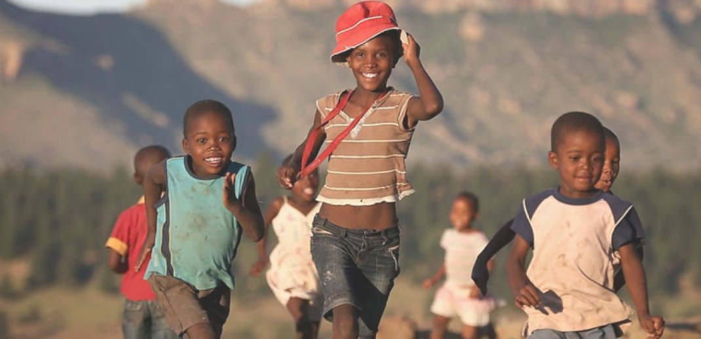
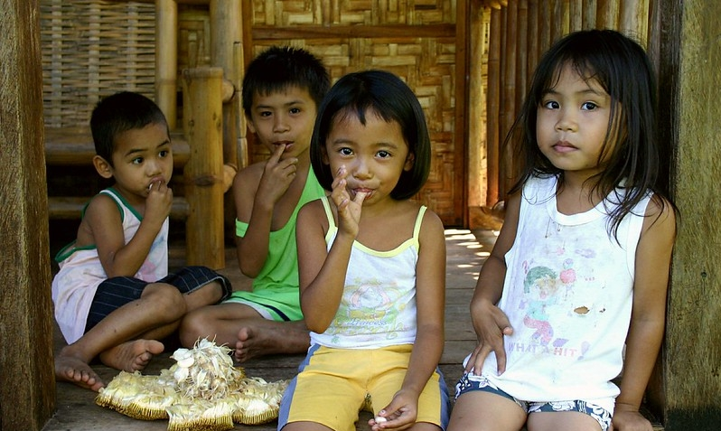

How much of the World lives in Poverty?
Population of poverty in our planet has been decreasing gradually. Organisations are working together to lift people out of poverty. People all around the world live in Poverty. Africa has ranked first in poverty population with 422 million people living in poverty. Followed by Africa, Asia has 420 million people living in poverty.
| POVERTY POPULATION IN 2020 | ||
|---|---|---|
| CONTINENT | COUNTRY | POVERTY POPULATION
(Million) |
| Global | All | 689M |
| Africa | DRC (Congo) | 60.5M |
| Africa | Central African Republic | 0.643M |
| Asia | North Korea | 14.4M |
| Asia | Nepal | 7.07M |
| South America | Suriname | 0.053M |
| South America | Bolivia | 1.3M |
| North America | Haiti | 6.51M |
| North America | Nicaragua | 0.87M |
| Europe | Moldava | 92.4M |
| Europe | Ukraine | 1.74M |
| Oceania | Kiribati | 0.027M |
| Oceania | Kiribati | 0.083M |
What does this show?
This table shows that there is poverty in every continent. Congo (Democratic Republic of Congo), has the highest rate of poverty within Africa with about 60 million people living below the poverty line! That's a lot of people! frica is the world’s last frontier in the fight against extreme poverty. Today, one in three Africans — 422 million people—live below the global poverty line. They represent more than 70 percent of the world’s poorest people.
